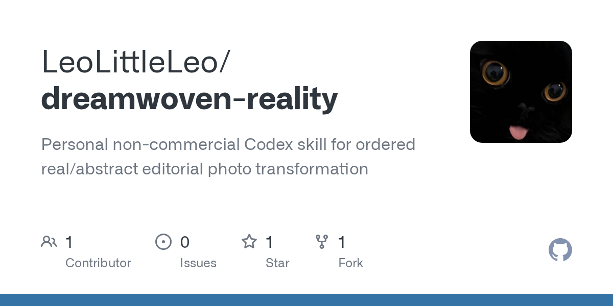
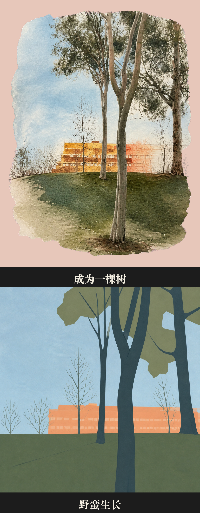

GitHub｜Dreamwoven Reality：攝影 × 抽象的 Codex Editorial Poster Skill

為什麼保存
欒帥請我在 GitHub 搜尋 `photo-abstract-editorial` 並打開最下面一條結果。該結果是 `LeoLittleLeo/dreamwoven-reality`，repo 描述為「Personal non-commercial Codex skill for ordered real/abstract editorial photo transformation」。
它值得放進 AI 學習雷達，因為它展示了一種很有代表性的趨勢：把影像風格不再寫成一段 prompt，而是封裝成 Codex Skill，包含視覺合約、場景診斷、人物保護、構圖比例、輸出腳本與品質門檻。這對欒帥日後整理「AI 影像工作流如何技能化」很有參考價值。
一句話摘要
`Dreamwoven Reality` 是一套把真實照片轉成「攝影 × 抽象」雙段式 editorial poster 的 Codex Skill：上半保留攝影辨識與局部抽象，下半重構成高度非攝影語義抽象，並用固定 `53 / 2 / 43 / 2` 版式輸出。
GitHub 查核
查核時間：2026-08-14。
- Repo：`LeoLittleLeo/dreamwoven-reality`
- 描述：Personal non-commercial Codex skill for ordered real/abstract editorial photo transformation
- 主要語言：Python
- 授權：自訂個人非商用授權，GitHub API 顯示為 Other / NOASSERTION
- stars / forks：約 1 star、1 fork
- open issues：0
- 建立時間：2026-08-12
- 最新 push：2026-08-14
- default branch：main
核心概念：Ordered Interweaving of Reality and Abstraction
README 強調，這不是 Lightroom preset、Instagram filter、一般 style transfer，也不是單純 prompt collection。它的核心是：
> 有秩序地交織真實與抽象。
也就是說，照片不同區域不會被同一種效果一鍵套上，而是依照人物、建築、道路、水體、山體、植被、陰影邊界與遮擋關係，分別決定：
- 哪些區域保留攝影資訊。
- 哪些區域進行抽象重構。
- 真實與抽象的邊界應該在哪裡出現。
- 哪些細節必須保留，才能維持場景識別。
- 哪些視覺噪聲要主動刪減。
固定輸出：53 / 2 / 43 / 2 editorial collage
`SKILL.md` 將 output mode 寫得很死：只支援 `processed`，沒有 alternate mode。
預設版面：
- 53%：上半 paper board，承載攝影感主導的局部抽象。
- 2%：黑色標題帶。
- 43%：全寬下半 extreme semantic abstraction panel。
- 2%：黑色副標題帶。
上半的 artwork 佔 board 內 75–85%。repo 明確禁止 postcard field、日期欄、郵戳、貼紙與 full-bleed 變體，讓輸出風格維持一致。
上下兩段的視覺合約
### Upper：攝影主導的局部抽象
Upper stage 以 photographic-led partial abstraction 為核心：
- source geometry 嚴格保留。
- 抽象程度 light-to-medium。
- 攝影可讀性仍為主。
- 主要人物臉部約 95% 感知保真。
- 英雄建築約 55% 保留攝影、45% 做材料替換式重構。
- 外輪廓使用 source-semantic free edge，而不是簡單矩形裁切。
### Lower：極端語義抽象
Lower stage 則是 85–100% non-photographic semantic distillation：
- 幾乎不保留攝影微細節。
- 可以重新安排空間、比例、軸線、深度順序與量體位置。
- 不保留真實臉部或皮膚。
- 主要人物只能保留可讀的抽象人形輪廓，最多一到兩種平塗色。
- 建築改成 extreme semantic reconstruction。
- 色彩採 `robot-dreams-logic` palette。
這個 stage contract 很適合教「同一張來源圖，不同輸出段落可以有不同忠實度與抽象規則」。
人物與生命主體保護
Repo 對人物與生命主體有明確規則：
- 主要人物上半預設為 face-locked、body-flexible、no-source-composite。
- 臉部、表情、視線、姿勢與接觸關係需維持高辨識度。
- 不能把原始照片的人臉、身體、服裝或局部像素直接貼回作品。
- lower 不保留真實臉部，改成抽象人形剪影。
- 動物、鳥、樹木、獨立植物等生命主體要作為完整視覺單元處理，不能同一個主體內部亂切真實與抽象語言。
這一點很重要，因為很多 AI 影像 prompt 只追求風格，而忽略身份、肖像、姿態與生成式重貼的倫理／品質問題。
工具與檔案結構
Repo 結構包含：
- `SKILL.md`：核心行為合約，包含 workflow、stage contract、strategy record、人物保護、抽象強度與 quality gate。
- `references/visual-direction.md`：視覺方向、構圖、色彩、上下段處理細節。
- `references/exemplars.md`：示例圖使用規則，強調只能當 transferable decision 參考，不能複製題材或配色。
- `scripts/inspect_photo.py`：讀取影像尺寸、metadata、EXIF 等。
- `scripts/compose_poster.py`：組成最終 53/2/43/2 editorial artwork。
- `agents/openai.yaml`：OpenAI / Codex agent 介面設定。
示例圖
README 內含 Tree and Architecture 與 Circular Quay Framing 兩組示例。這裡保存一張 processed exemplar，方便日後快速辨識該 repo 的視覺方向。

對欒帥的應用建議
- 可作為「Codex Skill 不只會寫程式，也能封裝視覺藝術指導」的案例。
- 可用於課程示範：如何把模糊的影像風格要求，拆成 stage contract、source faithfulness、abstraction vocabulary、layout contract 與 quality gate。
- 若未來要自製 AI 影像工作流，可參考它的結構，但不要直接商用，因為授權限制明確。
- 若想用在欒帥自己的旅遊照、城市照、建築照，可先作為個人非商用實驗；公開分享時需標註 LeoLittleLeo 與原 repo。
風險與限制
- 授權不是一般開源授權；只允許個人、非商業用途。
- 公開分享、展示、修改版或使用該 skill 產生的作品，都需要清楚 attribution。
- 禁止商業用途，包含付費委託、課程、品牌推廣、營利內容、商業模型訓練／評測等。
- 示例圖也有額外權利限制，不適合作為公開素材再利用或資料集。
- 這是視覺規則系統與 compose script，不等於完整的一鍵影像生成 SaaS；實際生成品質仍取決於所用圖像模型、人工審片與局部修正能力。
可帶走的觀念
`Dreamwoven Reality` 的價值在於把「攝影 × 抽象」變成一套可檢查的視覺工作流：它不只說要夢幻、抽象、editorial，而是定義上下段比例、人物保真、建築重構、抽象操作、邊界形狀、色彩策略與授權限制。這比單純 prompt 更適合作為 AI 視覺設計課的進階案例。